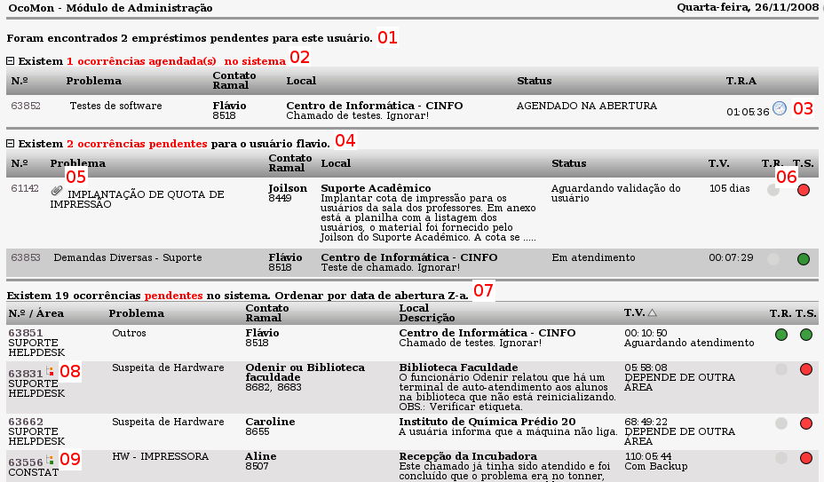
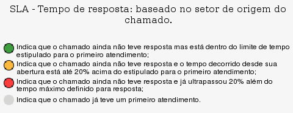
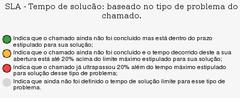

Início (Ocorrências -> Início)

Tela principal do módulo de ocorrências - versão 2.0rc3
Essa tela mostra uma série de informações importantes para o controle dos chamados não concluídos no sistema. Falaremos sobre elas a seguir.
N.º - É o número da ocorrência/chamado no sistema. Esse número é único. Ao clicar no número do chamado será exibida a tela com as informações detalhadas do mesmo bem como suas opções de edição.
Problema - É a classificação quanto ao tipo de problema ou atividade atribuída ao chamado no ato de sua abertura. Para maiores informações sobre esse e o outros campos exibidos nessa tela leia a página sobre
abertura de chamados.
01 - Essa mensagem indica que foram registrados empréstimos pelo usuário logado no sistema. O OcoMon permite que sejam registradas as operações de empréstimos de materiais, possibilitando um maior controle e evitando o estravio decorrente de esquecimentos. Pode ser um exemplo de empréstimo: emprestar o manual do OpenOffice.org para um colega de outro departamento.
02 - Essa mensagem informa que há chamados agendados no sistema. Os chamados agendados podem ficar visíveis (como na tela de exemplo) ou ocultos. Para alternar entre esses modos de visualização basta clicar no ícone com sinal de "+" ou "-" que antecede a mensagem.
03 - O ícone do relógio indica que a mensagem está agendada no sistema. Chamados agendados só entrarão na fila de atendimento na data para qual forem agendados. A sigla T.R.A significa: Tempo Restante para o Atendimento, ou seja, o tempo que é exibido ao lado do ícone do relógio vai reduzindo até chegar em 0 (Zero) e após isso entra na fila de atendimento normal.
04 - Mensagem que indica as ocorrências/chamados vinculados ao operador/técnico logado no sistema. Chamados vinculados a um operador/técnico não aparecem no painel principal do sistema e ficam visíveis apenas para o operador para o qual estiverem associados.
05 - O ícone "clips" indica que há pelo menos um arquivo anexado ao chamado. Para ter acesso ao arquivo basta clicar no ícone para obter a exibição da listagem de arquivos, a apartir daí é possível realizar o download do arquivo.
06 - Nessa tela, os semáforos são extremamente importantes, pois indicam a situação dos chamados quanto aos tempos de resposta e solução.
Quanto ao tempo de resposta os significados dos semáforos são:

Quanto ao tempo de solução os significados dos semáforos são:

Atenção: o semáforo de T.S. (tempo de solução), mesmo estando
laranja ou vermelho no painel de visualização de ocorrências pode ser atualizado como verde no relatório de SLAs (veremos mais adiante) em função de situações específicas como indisponibilidade por parte do próprio usuário dificultando o atendimento e por consequência a conclusão da atividade.
07 - Essa mensagem indica o início do painel principal de ocorrências no sistema. Nesse painel são exibidas todas as ocorrências, das áreas que o operador logado pertence, que estão aguardando alguma ação por parte da equipe técnica e ainda não estão associadas há um operador/técnico em específico, ou seja, as ocorrências desse painel ficam visíveis a todos operadores das áreas vinculadas a elas.
08 - Esse ícone em forma de galho indica que a ocorrência está vinculada a outra ocorrência como sub-chamado ou como origem de outro chamado. A cor do nó inferior indica se a ocorrência depende da conclusão de outra para ser concluída ou não. No caso do exemplo, o nó inferior está
vermelho, sendo assim, essa ocorrência não pode ser concluída até que a sua ocorrência-vínculo seja concluída.
09 - Mesmo caso do item 08, no entanto, como o nó inferior está
verde a ocorrência não possui restrições relacionadas a outras ocorrências para ser encerrada.
Além das informações citadas, a partir da versão 2.0RC5, há também uma coluna referente à prioridade de atendimento do chamado. Para obter maiores informações sobre essa coluna acesse a documentação referente a
Prioridades de atendimento.